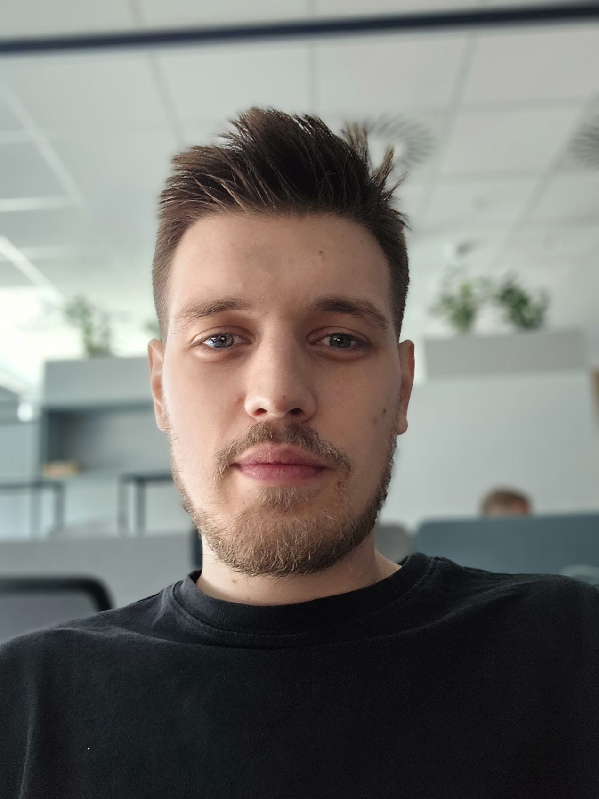

Branko Bukilić
QA Engineer • Developer in Progress • Problem-Solver
Summary
I’m a motivated and detail-oriented professional with a strong background in IT and software testing, currently expanding my skills into programming and automation. My experience in manual QA, web application testing, and API validation has given me a solid understanding of how systems work and how to make them better. I’m always learning new technologies, especially Python and Golang, to grow as a developer and bring more value to the projects I work on.
As a person, I’m both analytical and creative. I enjoy combining logic with imagination — whether it’s through coding, music, or problem-solving. I’m passionate about continuous learning, collaboration, and building solutions that make a real difference. I value teamwork, honesty, and consistency, and I always aim to leave a positive impact in whatever I do.
Education
- Menadžment informacionih sistema — Union Fakultet
Work Experience
-
QA Engineer — Nites d.o.o
January 2023 — Present
- Conducted manual testing of web applications to identify bugs and ensure functionality.
- Collaborated with developers to understand requirements and provide feedback on usability.
- Created and executed test cases for various features and functionalities.
- Participated in daily stand-ups and sprint planning meetings as part of an Agile team.
- Utilized Postman for API testing and validation.
Skills
- Manual Testing
- Web Application Testing
- API Testing with Postman
- HTML & CSS
- Python (Basic)
- Golang (Basic)
- Agile Methodologies
- Problem-Solving
- Team Collaboration